NIGHTFURY / 美术与实机图集Art and game gallery
先看当前游戏实机截图，再浏览概念封面与暂未开放地图存档。概念封面由 OpenAI ImageGen 生成，与实机截图分开展示。蛙国为当前几何部分试玩。Current game captures come first, followed by concept covers and unavailable-map artwork. OpenAI ImageGen concept covers are shown separately from game captures. Frog Kingdom is a partial geometry preview.
当前实机画面Current game captures
2026-09-24 · 4K 游戏实时渲染，自由镜头、隐藏界面。模型、材质与光照保持游戏设置。2026-09-24 · 4K real-time game rendering, free camera with UI hidden. Game models, materials and lighting are unchanged.
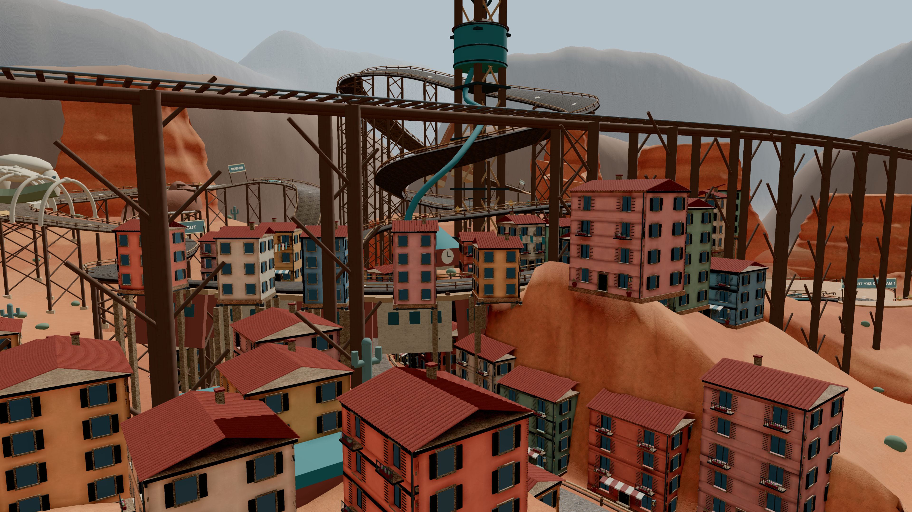
峡谷小镇 · 层叠街区Canyon town · layered district
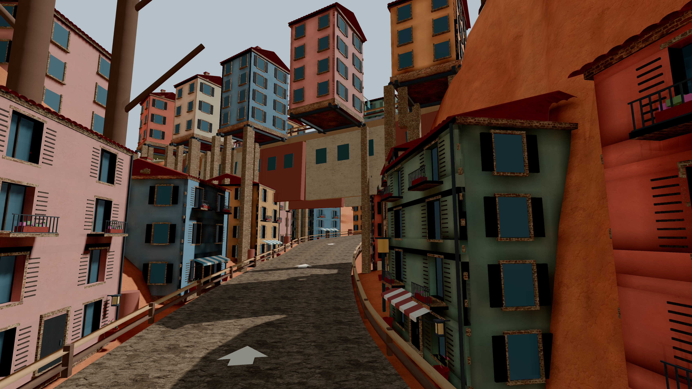
峡谷小镇 · 街巷Canyon town · streets
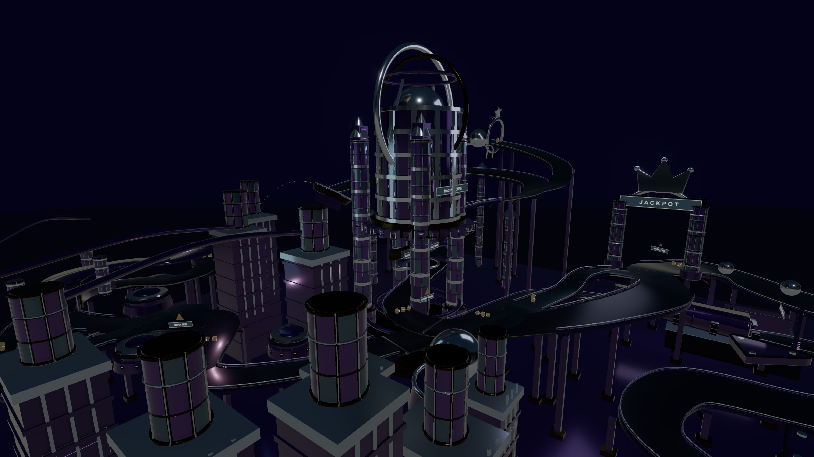
弹珠机 · 多层核心塔Pinball · layered core tower
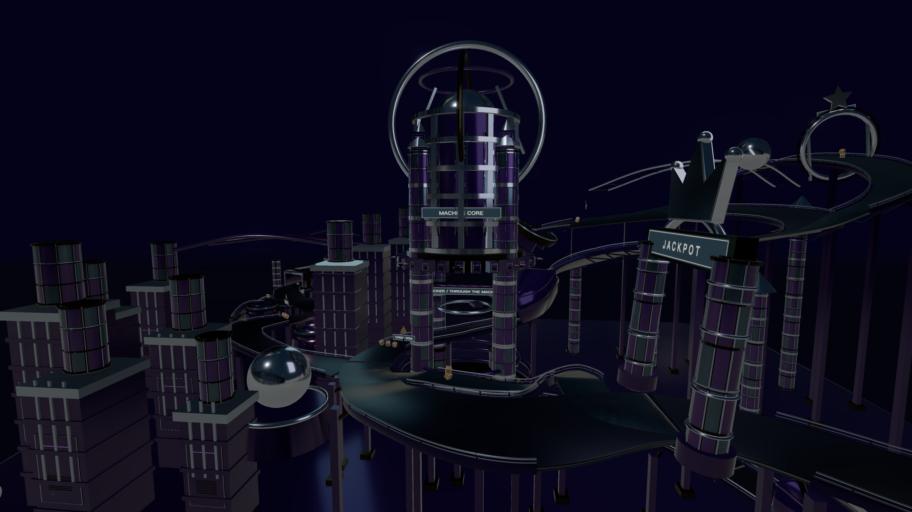
弹珠机 · 金属轨道Pinball · metal tracks
概念美术Concept artwork
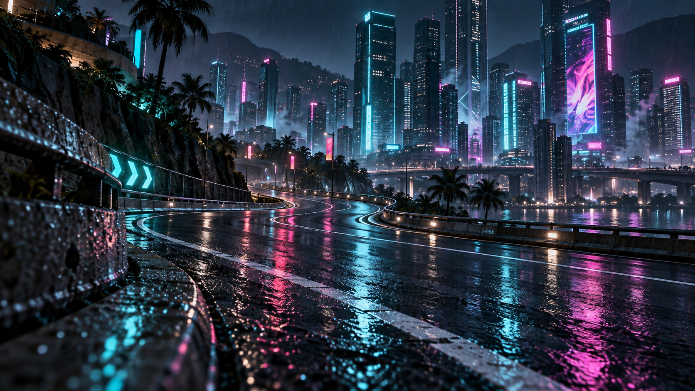
霓虹都市Neon City
夜雨霓虹街区Rainy neon streets
选择此地图Choose this map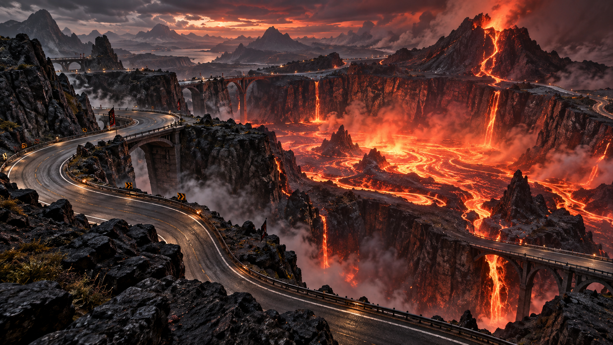
熔岩火山Lava Volcano
熔岩与火山赛道Lava and volcanic roads
选择此地图Choose this map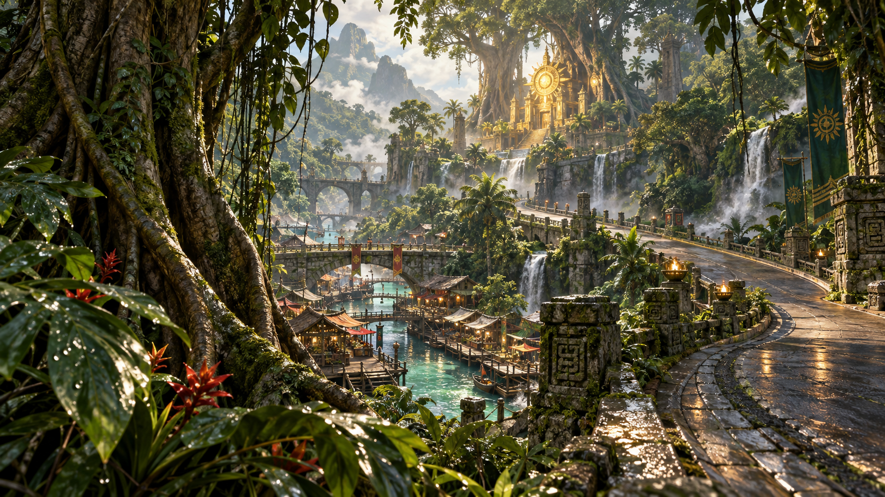
翡翠雨林Jade Rainforest
林冠水市与巨木神庙Canopy waterways and a giant-tree temple
选择此地图Choose this map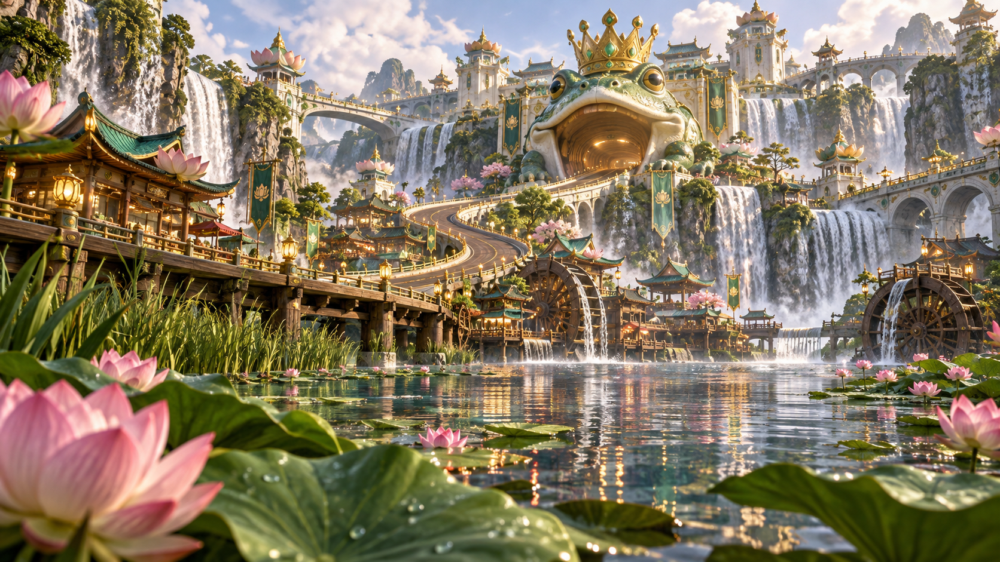
蛙蛙王国 · 试玩Frog Kingdom · Preview
当前几何部分试玩，仍在制作中Partial geometry preview; still in development
选择此地图Choose this map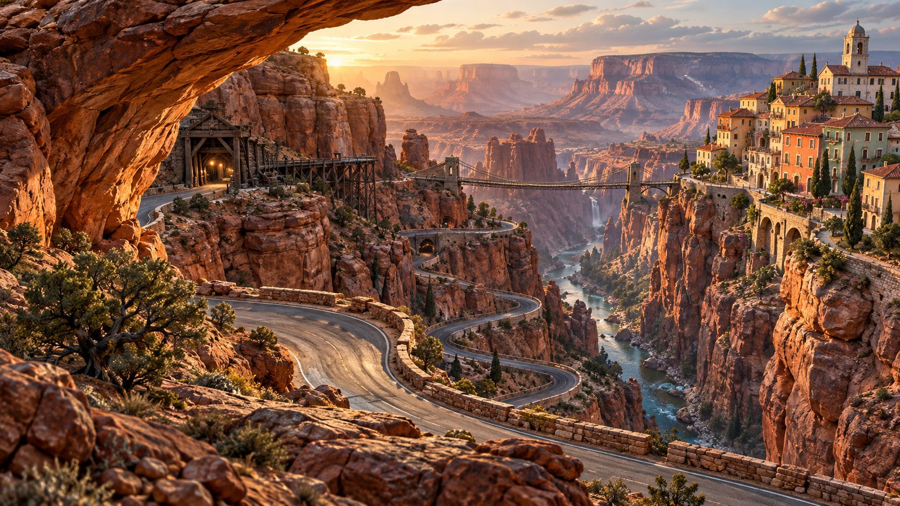
峡谷飞跃 · 新版Canyon Leap · New version
新版赤岩峡谷赛道The rebuilt red-rock canyon
选择此地图Choose this map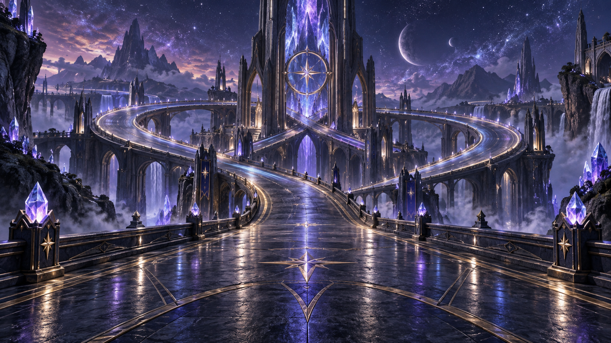
星辉秘境Starlight Realm
星桥与交错回环Star bridges and intertwined loops
选择此地图Choose this map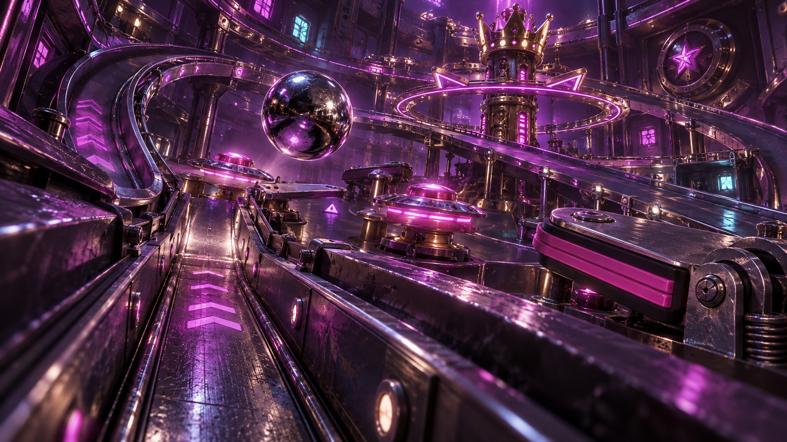
霓虹弹珠机Neon Pinball
紫色赛博朋克弹珠赛道A violet cyberpunk pinball circuit
选择此地图Choose this map暂未开放地图 · 概念存档Unavailable maps · Concept archive
保留宣传图供浏览；以下为 AI 概念图，不是实机截图，暂不提供试玩入口。Artwork is preserved for browsing. These are AI concept images, not game screenshots; these maps are currently unavailable.
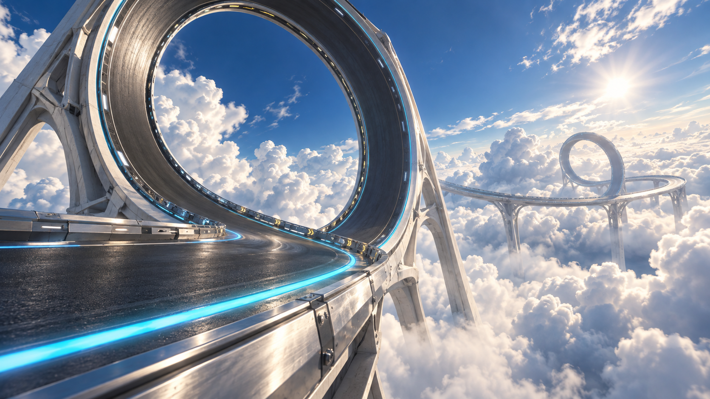
云端回环Sky Loop
暂未开放 · 概念图Unavailable · Concept artwork
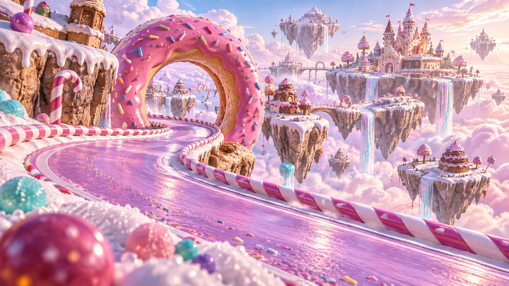
糖果世界Candy World
暂未开放 · 概念图Unavailable · Concept artwork
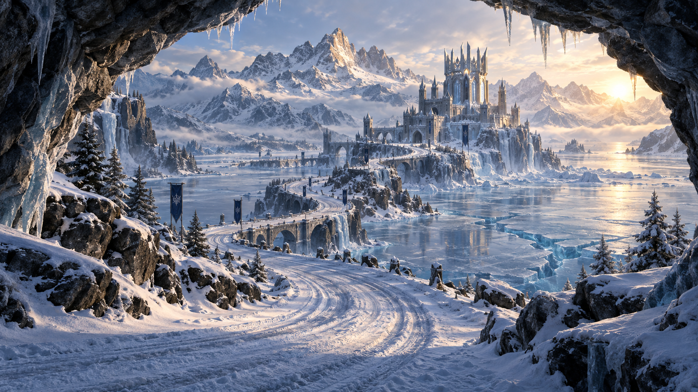
冰雪王冠Frozen Crown
暂未开放 · 概念图Unavailable · Concept artwork